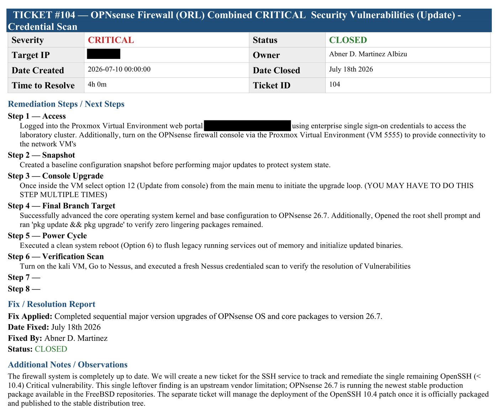

An excerpt of the report and ticket log, redacted
19 pages from a 145-page report and a 141-page ticket log: compensating-controls research, the remediation plan for the firewall, server and end-of-life hosts, two complete tickets with screenshot evidence, and the conclusion. Addresses, hostnames, usernames and credentials removed.
The environment
The scenario was a fictional company with two routed sites and a WAN segment between them. Ten hosts, deliberately mixed, including systems old enough to be interesting:
| Role | Platform |
|---|---|
| Perimeter firewall, routing, DHCP | OPNsense on FreeBSD |
| Primary domain controller — AD, DNS, DHCP | Windows Server 2019 |
| Branch domain controller — AD DS, DNS | Windows Server 2008 R2 |
| Mail and IIS host | Windows Server 2016 |
| Vulnerability scanner | Rocky Linux 8 |
| Log aggregation host | Rocky Linux 8 |
| Web / CMS host | Debian with Apache and WordPress |
| Scan management host | Kali Linux |
| Client workstations (two, one per site) | Windows 10 and Windows 7 |
The legacy hosts are the point. A 2008 R2 domain controller and a Windows 7 workstation are exactly the systems that generate findings nobody can simply patch away, and they force the question the rest of the project is really about: what do you do when remediation is not available?
How I scanned it
I wrote a repeatable thirteen-step procedure before scanning anything, because the order matters. The firewall boots first or there is no routing between sites; then the scanner and the management host; then targets, brought up by pool hierarchy. Skipping that produces scan results full of hosts that were simply unreachable, which looks identical to hosts that are fine.
The first pass was deliberately non-credentialed. I left the credentials blank to simulate what an unauthenticated attacker sees from the network — service banners, exposed ports, anything reachable without a login. Results were filtered to Critical and High so the report stayed actionable rather than exhaustive.
The second pass was credentialed, with authentication to each host. That is a different question: not "what can an outsider reach" but "what is actually installed and out of date on this machine." The gap between the two passes is one of the more useful things a scanner produces, and it is invisible if you only ever run one kind of scan.
Port scanning with Nmap ran separately against every host, which produced its own set of findings — twelve of the forty-three tickets came from open-port results rather than from the vulnerability scanner.
While documenting the tooling I worked through all twenty Nessus scan templates and what each is actually for. Several turned out to matter well beyond this project: policy compliance auditing against CIS Benchmarks and DISA STIGs, SCAP and OVAL auditing, the internal PCI network scan and the quarterly external ASV-format scan, an Active Directory starter scan over LDAPS, and a cryptographic inventory for weak ciphers and aging TLS.
The remediation process
Findings went into a ticket tracker — one sheet per ticket, carrying the target host and address, the finding, numbered remediation steps, a resolution report, notes, and screenshot evidence. Forty-three tickets, worked against a four-hour resolution allotment each. Twenty-two reached Closed; twenty-one remained Open at the end of the project.
Every remediation ticket opens with the same first step: take a snapshot before changing anything. That was not a course requirement. It was the habit I wanted to build, because the failure mode in a lab and the failure mode in production are the same — you change four things, something breaks, and you cannot tell which change did it.
A detail I would flag before anyone else does. Three of the closed tickets have remediation steps that read badly out of context: disabling a host firewall profile, force-starting the Remote Registry service, enabling SSH. Those were scan-enablement changes — the credentialed scan could not authenticate until SMB and Remote Registry were reachable — in an isolated lab, reverted afterward.
In production you would not do it that way. You would scope a firewall rule to the scanner's source address and revert it at the close of the scan window, rather than disabling a profile wholesale. I would rather say that here than have someone find it in the ticket log and assume I did not know the difference.

What to do when you cannot patch
The more interesting half of the project was researching compensating controls for findings where patching is not an option. Five categories came up, and each needs a different answer:
- End-of-life systems no longer receiving vendor updates — the 2008 R2 and Windows 7 hosts in this environment.
- Zero-days, where no patch exists yet for anyone.
- Operational technology, where the constraint is not technical but that the system cannot be taken down.
- In-house legacy applications where the source code is gone or unmaintained.
- Edge and embedded firmware, often with no update mechanism at all.
The pattern across all five is that the control moves outward — network segmentation, restricting who can reach the system at all, monitoring the traffic that remains, and accepting a documented, time-bound risk with an owner attached to it. "We will patch it eventually" is not a control. "It sits on an isolated VLAN, only these three hosts can reach it, and the exception is reviewed in ninety days" is.
What I would do differently
- Close the loop on the log host. There was a log aggregation server in this environment and I patched it — but I never used it. Everything here is scan-and-remediate; none of it is detection. That is the honest gap in this project and the one I am working on next.
- Track remediation time, not just completion. I recorded whether a ticket closed, not how long it took. Mean time to remediate by severity is the number that tells you whether the process is working.
- Annotate the scan-enablement tickets in the tracker itself, rather than explaining them afterward. A one-line note in the document is cheaper than a conversation.
- Re-verify closures with a targeted rescan per ticket rather than relying on the remediation steps having been performed correctly.
Coursework completed for Project & Portfolio VII, Full Sail University, July 2026. The environment, the company and all host data are fictional and part of the course scenario. The ticket tracking workbook was a template provided for the course; the forty-three tickets and their contents are mine. Host addresses and credentials are deliberately omitted from this writeup.